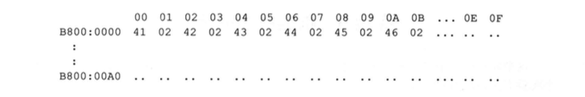
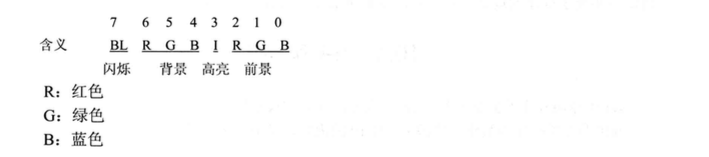
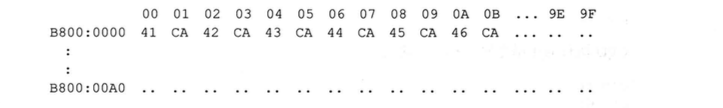

实验9 根据材料编程
编程：在屏幕中间分别显示绿色、绿底红色、白底蓝色的字符串 ‘welcome to masm!’。
编程所需的知识通过阅读、分析下面的材料获得。
80*25彩色字符模式显示缓冲区的结构:
内存地址空间中，B8000H~BFFFFH共32KB的空间，为80*25彩色字符模式的显示缓冲区。向这个地址空间写入数据，写入的内容将立即出现在显示器上。
在80*25彩色字符模式下，显示器可以显示25行，每行80个字符，每个字符可以有256中属性(背景色、前景色、闪烁、高亮等组合信息).
这样，一个字符在显示缓冲区中就要占两个字节，分别存放字符的ASCLL码和属性。80*25模式下，一屏的内容在显示缓冲区共占4000个字节。
显示缓冲区分为8页，每页4KB，显示器可以显示任意一页的内容。一般情况下，显示第0页的内容。也就是说通常情况下，B8000H~B8F9FH中的4000个字节的内容将出现在显示器上。
在一页显示缓冲区中：
偏移000~09F对应显示器上的第1行(80个字符占160个字节)；
偏移0A0~13F对应显示器上的第2行;
偏移140~1DF对应显示器上的第3行；
以此类推，可知偏移F00~F9F对应显示器上的第25行。
在一行中，一个字符占两个字节的存储空间(一个字)，低位字节存储字符的ASCLL码，高位字节存储字符的属性。一行共有80个字符，占160个字节。
即在一行中:
00~01单元对应显示器上的第1列；
02~03单元对应显示器上的第2列；
04～05单元对应显示器上的第3列；
依此类推，可知，9E~9F单元对应显示器上的第80列。
例如:在显示器的0行0列显示黑底绿色的字符串’ABCDEF’
(‘A’的ASCLL码值为41H，02H表示黑底绿色)
显示缓冲区里的内容为:

可以看出，在显示缓冲区中，偶地址存放字符，奇地址存放字符的颜色属性。
一个在屏幕上显示的字符，具有前景(字符色)和背景(底色)两种颜色，字符还可以以高亮度和闪烁的方式显示。前景色、背景色、闪烁、高亮等信息被记录在属性字节中。
属性字节的格式:

可以按位设置属性字节，从而配出各种不同的前景色和背景色。
比如:
红底绿字，属性字节为:01000010B;
红底闪烁绿字，属性字节为:11000010B;
红底高亮绿字，属性字节为:01001010B;
黑底白字，属性字节为:00000111B;
白底蓝字，属性字节为:01110001B。
例如:在显示器的0行0列显示红底高亮闪烁绿色的字符串’ABCDEF’
（红底高亮闪烁绿色，属性字节为:11001010B, CAH）
显示缓冲区里的内容为:

注意：闪烁的效果必须在全屏DOS方式下才能看到。
一行可以放80个字符，也就是160个字节（一个字符两个字节，一个存放ASCII码，一个存放属性）。一页可以显示25行，一页也就有160*25=4000个字节
那么第一行的最后一个字节为158[9EH]（第一个字节从零开始）
则第二行最后一个字符的地址为158+160[13EH]
首先我们先处理一行数据，将 ‘welcome to masm!’ 显示为绿色
1
2
3
4
5
6
7
8
9
10
11
12
13
14
15
16
17
18
19
20
21
22
23
24
25
26
27
28
29
30
31
32
33
34
35
36
37
38
39
40
41
42
43
44
45
46
47
48
49
50
51
52
| assume cs:code,ds:data,ss:stack
data segment
;0123456789ABCDEF
db 'welcome to masm!' ;ds:[si]
db 00000010B ;0000 0000 绿色
db 00100100B ; rgb rgb 绿底红色
db 01110001B ; 白底蓝色
data ends
stack segment stack
db 128 dup (0)
stack ends
code segment
;编程：在屏幕中间分别显示 绿色、绿底红色、白底蓝色的字符串 'welcome to masm!'
;数据的组织
;数据的处理 一个字符在屏幕上占用2个字节，低地址放字符的ASCII码，高地址放字符的属性
start: mov ax,stack
mov ss,ax
mov sp,128
mov bx,data
mov ds,bx
mov bx,0B800H ;彩色字符显示缓冲区
mov es,bx
mov si,0
mov di,160*10 + 30*2 ;偶数地址
mov bx,16
mov dx,0
mov cx,16
mov dh,ds:[bx] ;高地址控制字符属性 mov es:[di],dx es:[di+0],dl es:[di+1],dh
showRow:mov dl,ds:[si] ;低地址显示字符
mov es:[di],dx
inc si
add di,2
loop showRow
mov ax,4C00H
int 21H
code ends
end start
|
设置外循环，显示其他两行
1
2
3
4
5
6
7
8
9
10
11
12
13
14
15
16
17
18
19
20
21
22
23
24
25
26
27
28
29
30
31
32
33
34
35
36
37
38
39
40
41
42
43
44
45
46
47
48
49
50
51
52
53
54
55
56
57
58
59
60
61
62
63
64
65
66
67
68
| assume cs:code,ds:data,ss:stack
data segment
;0123456789ABCDEF
db 'welcome to masm!' ;ds:[si]
db 00000010B ;0000 0000 绿色
db 00100100B ; rgb rgb 绿底红色
db 01110001B ; 白底蓝色
data ends
stack segment stack
db 128 dup (0)
stack ends
code segment
;编程：在屏幕中间分别显示 绿色、绿底红色、白底蓝色的字符串 'welcome to masm!'
;数据的组织
;数据的处理 一个字符在屏幕上占用2个字节，低地址放字符的ASCII码，高地址放字符的属性
start: mov ax,stack
mov ss,ax
mov sp,128
mov bx,data
mov ds,bx
mov bx,0B800H ;彩色字符显示缓冲区
mov es,bx
mov si,0
mov di,160*10 + 30*2 ;偶数地址
mov bx,16
mov dx,0
mov cx,3
Masm: push bx
push cx
push si
push di
mov cx,16
mov dh,ds:[bx] ;高地址控制字符属性 mov es:[di],dx es:[di+0],dl es:[di+1],dh
Row: mov dl,ds:[si] ;低地址显示字符
mov es:[di],dx
inc si
add di,2
loop Row
pop di
pop si
pop cx
pop bx
add di,160 ;换行
inc bx
loop Masm
mov ax,4C00H
int 21H
code ends
end start
|